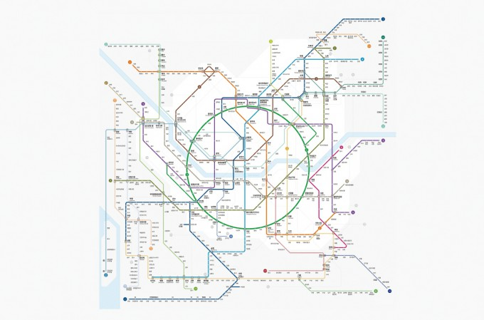

←
수도권 전철 노선도
Kim
PNR 14일

1·4
●
1·2
1·3
2·3
3·4
2·5
2
2·7
2·8
2·9
2
2
2·신
2
2·3
2
2·4
3·7·9
1·2
2·5
2·9
2·6
2·A
2
5·6
5·9
4·7
1
3
1·7
2·7
5·8
5·7
6·7
6·A
3·6
⚠️
✈️
AUTUS 노선 안내
1
정석입국
2
교육순환
3
취업
4
정착
5
전문
7
기술
9
급행
신
특별
A
출입국
현재
하차
+
−
⟲
2
동대문역사문화공원
다음:
왕십리
현재역으로 이동
환승역
×
어느 호선으로 환승하시겠습니까?